Multivariées
library(sf)## Linking to GEOS 3.10.2, GDAL 3.4.1, PROJ 7.2.1; sf_use_s2() is TRUElibrary(mapsf)1 Préparation de la donnée
On lit la donnée, on filtre sur Bondy
data <- read.csv("data/election2022.csv", fileEncoding = "UTF-8", dec = ",")
names(data)## [1] "Code.du.département" "Libellé.du.département"
## [3] "Code.de.la.circonscription" "Libellé.de.la.circonscription"
## [5] "Code.de.la.commune" "Libellé.de.la.commune"
## [7] "Code.du.b.vote" "Inscrits"
## [9] "Abstentions" "X..Abs.Ins"
## [11] "Votants" "X..Vot.Ins"
## [13] "Blancs" "X..Blancs.Ins"
## [15] "X..Blancs.Vot" "Nuls"
## [17] "X..Nuls.Ins" "X..Nuls.Vot"
## [19] "Exprimés" "X..Exp.Ins"
## [21] "X..Exp.Vot" "N.Panneau"
## [23] "Sexe" "Nom"
## [25] "Prénom" "Voix"
## [27] "X..Voix.Ins" "X..Voix.Exp"
## [29] "N.Panneau.1" "Sexe.1"
## [31] "Nom.1" "Prénom.1"
## [33] "Voix.1" "X..Voix.Ins.1"
## [35] "X..Voix.Exp.1" "N.Panneau.2"
## [37] "Sexe.2" "Nom.2"
## [39] "Prénom.2" "Voix.2"
## [41] "X..Voix.Ins.2" "X..Voix.Exp.2"
## [43] "N.Panneau.3" "Sexe.3"
## [45] "Nom.3" "Prénom.3"
## [47] "Voix.3" "X..Voix.Ins.3"
## [49] "X..Voix.Exp.3" "N.Panneau.4"
## [51] "Sexe.4" "Nom.4"
## [53] "Prénom.4" "Voix.4"
## [55] "X..Voix.Ins.4" "X..Voix.Exp.4"
## [57] "N.Panneau.5" "Sexe.5"
## [59] "Nom.5" "Prénom.5"
## [61] "Voix.5" "X..Voix.Ins.5"
## [63] "X..Voix.Exp.5" "N.Panneau.6"
## [65] "Sexe.6" "Nom.6"
## [67] "Prénom.6" "Voix.6"
## [69] "X..Voix.Ins.6" "X..Voix.Exp.6"
## [71] "N.Panneau.7" "Sexe.7"
## [73] "Nom.7" "Prénom.7"
## [75] "Voix.7" "X..Voix.Ins.7"
## [77] "X..Voix.Exp.7" "N.Panneau.8"
## [79] "Sexe.8" "Nom.8"
## [81] "Prénom.8" "Voix.8"
## [83] "X..Voix.Ins.8" "X..Voix.Exp.8"
## [85] "N.Panneau.9" "Sexe.9"
## [87] "Nom.9" "Prénom.9"
## [89] "Voix.9" "X..Voix.Ins.9"
## [91] "X..Voix.Exp.9" "N.Panneau.10"
## [93] "Sexe.10" "Nom.10"
## [95] "Prénom.10" "Voix.10"
## [97] "X..Voix.Ins.10" "X..Voix.Exp.10"
## [99] "N.Panneau.11" "Sexe.11"
## [101] "Nom.11" "Prénom.11"
## [103] "Voix.11" "X..Voix.Ins.11"
## [105] "X..Voix.Exp.11" "INSEE_COM"data <- data [data$INSEE_COM == '93010',]
#data <- data [data$INSEE_COM == '72154',]
# la flècheOn la met en forme au niveau des colonnes :
colonne des % des inscrits
récupération des noms des candidats
ind <- grep("Ins", names(data))
pct <- data [, ind]
ind <- grep("Nom", names(data))
# la 1e ligne suffit
noms <- data [1,ind]
# on attribue les noms des candidats
names(pct) [c(7:18)] ## [1] "X..Voix.Ins" "X..Voix.Ins.1" "X..Voix.Ins.2" "X..Voix.Ins.3"
## [5] "X..Voix.Ins.4" "X..Voix.Ins.5" "X..Voix.Ins.6" "X..Voix.Ins.7"
## [9] "X..Voix.Ins.8" "X..Voix.Ins.9" "X..Voix.Ins.10" "X..Voix.Ins.11"names(pct) [c(7:18)] <- nomsOn retient uniquement l’abstention
pct <- pct [,c(2, 7:18)]
names(pct) [1] <- "abst"On attribue les numéros des bureaux
rownames(pct) <- c(1:length(data$Code.du.b.vote))
rownames(pct)## [1] "1" "2" "3" "4" "5" "6" "7" "8" "9" "10" "11" "12" "13" "14" "15"
## [16] "16" "17" "18" "19" "20" "21" "22" "23" "24" "25" "26" "27" "28" "29" "30"
## [31] "31" "32"On sauvegarde pour pouvoir l’utiliser à nouveau
write.csv(pct, "data/pctBondy.csv", fileEncoding = "UTF-8")2 Exploration de la donnée
pct <- read.csv("data/pctBondy.csv", fileEncoding = "UTF-8")
# élimination de la 1e colonne si nécessaire
pct <- pct [,-1]
summary(pct)## abst ARTHAUD ROUSSEL MACRON
## Min. :20.80 Min. :0.0000 Min. :0.120 Min. : 7.92
## 1st Qu.:26.56 1st Qu.:0.2075 1st Qu.:0.530 1st Qu.:10.97
## Median :29.11 Median :0.2850 Median :1.015 Median :12.84
## Mean :29.67 Mean :0.3269 Mean :1.106 Mean :13.26
## 3rd Qu.:33.23 3rd Qu.:0.3925 3rd Qu.:1.495 3rd Qu.:15.08
## Max. :37.61 Max. :1.0100 Max. :2.770 Max. :22.60
## LASSALLE LE.PEN ZEMMOUR MÉLENCHON
## Min. :0.110 Min. : 2.330 Min. :0.610 Min. :24.40
## 1st Qu.:0.700 1st Qu.: 6.173 1st Qu.:1.827 1st Qu.:33.36
## Median :0.950 Median : 7.815 Median :2.790 Median :35.27
## Mean :1.019 Mean : 8.142 Mean :2.834 Mean :36.37
## 3rd Qu.:1.353 3rd Qu.:10.062 3rd Qu.:3.705 3rd Qu.:40.24
## Max. :2.200 Max. :14.200 Max. :5.170 Max. :50.31
## HIDALGO JADOT PÉCRESSE POUTOU
## Min. :0.0000 Min. :0.0000 Min. :0.380 Min. :0.0000
## 1st Qu.:0.4300 1st Qu.:0.6875 1st Qu.:1.395 1st Qu.:0.2675
## Median :0.6900 Median :1.6050 Median :2.085 Median :0.4050
## Mean :0.7003 Mean :1.5250 Mean :2.239 Mean :0.4381
## 3rd Qu.:0.9500 3rd Qu.:2.1300 3rd Qu.:3.188 3rd Qu.:0.6025
## Max. :1.5200 Max. :3.7900 Max. :5.030 Max. :1.2500
## DUPONT.AIGNAN
## Min. :0.1300
## 1st Qu.:0.5475
## Median :0.7500
## Mean :0.8472
## 3rd Qu.:1.1450
## Max. :1.7600cor(pct)## abst ARTHAUD ROUSSEL MACRON LASSALLE
## abst 1.00000000 -0.09124502 -0.60695243 -0.86646274 -0.5864629
## ARTHAUD -0.09124502 1.00000000 -0.13340523 0.31314843 0.1097814
## ROUSSEL -0.60695243 -0.13340523 1.00000000 0.51762898 0.6629999
## MACRON -0.86646274 0.31314843 0.51762898 1.00000000 0.6125672
## LASSALLE -0.58646290 0.10978138 0.66299986 0.61256724 1.0000000
## LE.PEN -0.56721372 0.34203816 0.47300047 0.56621380 0.6844895
## ZEMMOUR -0.70687066 0.04239692 0.60379129 0.55030176 0.4912361
## MÉLENCHON 0.67650699 -0.34330375 -0.64689794 -0.75526662 -0.7577216
## HIDALGO -0.46001130 -0.11091136 0.25785445 0.37456278 0.3065050
## JADOT -0.80287393 0.16878089 0.65570636 0.68109138 0.5851233
## PÉCRESSE -0.76182636 0.01653658 0.56635567 0.64741839 0.4988701
## POUTOU -0.11064989 -0.07631365 0.07872894 0.02931963 0.1041182
## DUPONT.AIGNAN -0.51656434 0.02757267 0.29312002 0.29734963 0.1636518
## LE.PEN ZEMMOUR MÉLENCHON HIDALGO JADOT
## abst -0.56721372 -0.70687066 0.6765070 -0.46001130 -0.8028739
## ARTHAUD 0.34203816 0.04239692 -0.3433037 -0.11091136 0.1687809
## ROUSSEL 0.47300047 0.60379129 -0.6468979 0.25785445 0.6557064
## MACRON 0.56621380 0.55030176 -0.7552666 0.37456278 0.6810914
## LASSALLE 0.68448946 0.49123612 -0.7577216 0.30650501 0.5851233
## LE.PEN 1.00000000 0.61891028 -0.8835188 0.09895654 0.6190371
## ZEMMOUR 0.61891028 1.00000000 -0.7540586 0.33215324 0.6825063
## MÉLENCHON -0.88351878 -0.75405857 1.0000000 -0.20343821 -0.7393493
## HIDALGO 0.09895654 0.33215324 -0.2034382 1.00000000 0.1669768
## JADOT 0.61903713 0.68250632 -0.7393493 0.16697683 1.0000000
## PÉCRESSE 0.50420577 0.76590872 -0.7199984 0.38445787 0.7119466
## POUTOU 0.20246700 0.11210265 -0.1286294 -0.06104358 0.1493222
## DUPONT.AIGNAN 0.26882589 0.51160119 -0.3636486 0.10326308 0.4543633
## PÉCRESSE POUTOU DUPONT.AIGNAN
## abst -0.76182636 -0.11064989 -0.51656434
## ARTHAUD 0.01653658 -0.07631365 0.02757267
## ROUSSEL 0.56635567 0.07872894 0.29312002
## MACRON 0.64741839 0.02931963 0.29734963
## LASSALLE 0.49887014 0.10411821 0.16365181
## LE.PEN 0.50420577 0.20246700 0.26882589
## ZEMMOUR 0.76590872 0.11210265 0.51160119
## MÉLENCHON -0.71999840 -0.12862944 -0.36364860
## HIDALGO 0.38445787 -0.06104358 0.10326308
## JADOT 0.71194664 0.14932217 0.45436328
## PÉCRESSE 1.00000000 0.04772693 0.54522523
## POUTOU 0.04772693 1.00000000 0.08205208
## DUPONT.AIGNAN 0.54522523 0.08205208 1.00000000pairs(pct)
3 ACP analyse en composante principale
res <- prcomp(pct, scale. = F)
plot(res)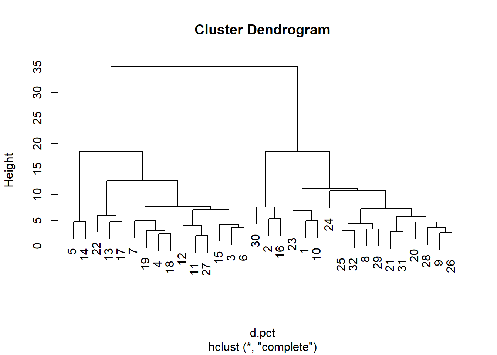
png("img/acpCentreNONReduite.png")
biplot(res)
dev.off()## png
## 2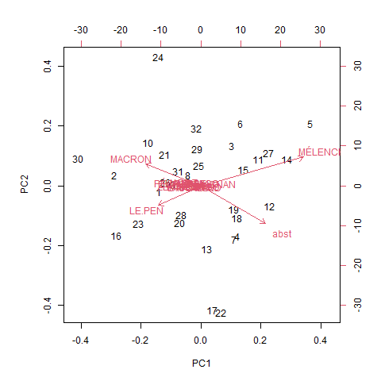
Deux graphiques superposés :
cercle des corrélations (les candidats)
nuage de points (les bureaux de vote)
On résume la donnée sur 2 axes seulement (PC1 et PC2)
Dans le cercle de correlations :
longueur flèche (mauvaise / bonne représentation)
position - proche / opposée - orthogonale (= aucune relation)
4 Classification hiérarchique
# matrice des distances
d.pct <- dist(pct)
cah <- hclust(d.pct)
plot(cah)Dendrogramme avec matérialisation des groupes
#png("img/lafleche3.png")
plot(cah)
rect.hclust(cah,k=4)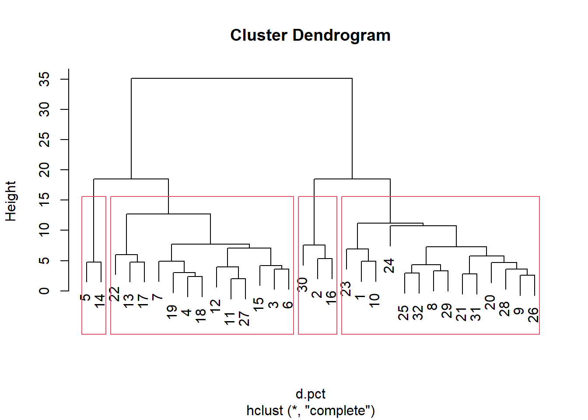
groupes.cah <- cutree(cah,k=4)
#dev.off()
#liste des groupes
print(sort(groupes.cah))## [1] 1 1 1 1 1 1 1 1 1 1 1 1 1 1 2 2 2 3 3 3 3 3 3 3 3 3 3 3 3 3 4 45 Quelques remarques autour de ces premiers résultats
5.1 Correspondance cercle de correlation et dendrogramme
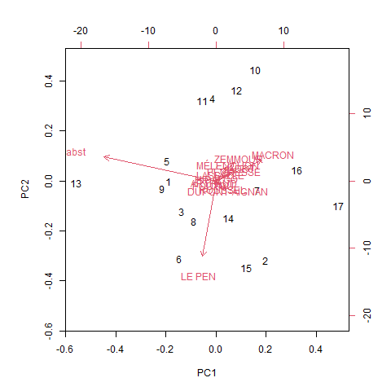 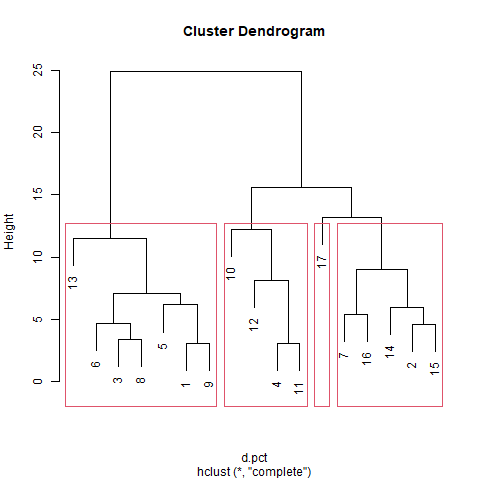
Cas de la Flèche : isolement du bureau 17
L’abstention est beaucoup plus basse qu’ailleurs (17), Mélenchon très sous représenté et Macron sur représenté.
On prend le bureau 13 qui est à l’opposé sur le cercle de corrélation
# on filtre sur les deux bureaux
pct_13_17 <- pct [c(13,17),]
# on transforme en matrice pour pouvoir faire un graphique de comparaison des répartitions
mat <- as.matrix(pct_13_17)
png("img/lafleche2.png")
barplot(mat, las = 2, beside = T, col = terrain.colors(2))
dev.off()
5.2 Quelques graphiques pour mieux observer
5.2.1 Comparer les bureaux variable par variable
commune <- read.csv("data/election2022.csv", fileEncoding = "UTF-8", dec =",")
commune <- commune [commune$INSEE_COM == '93010',]
barplot(commune$Inscrits~commune$Code.du.b.vote, las =2)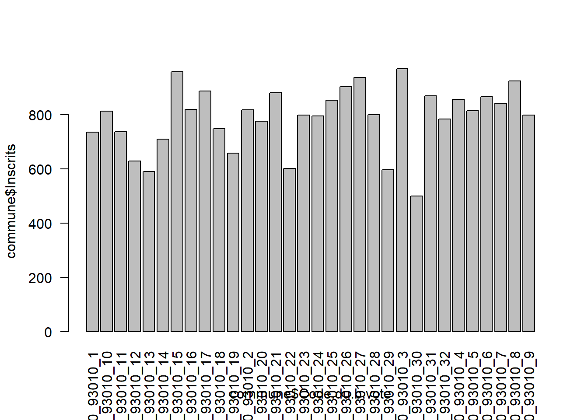
barplot(commune$Abstentions~commune$Code.du.b.vote, las =2)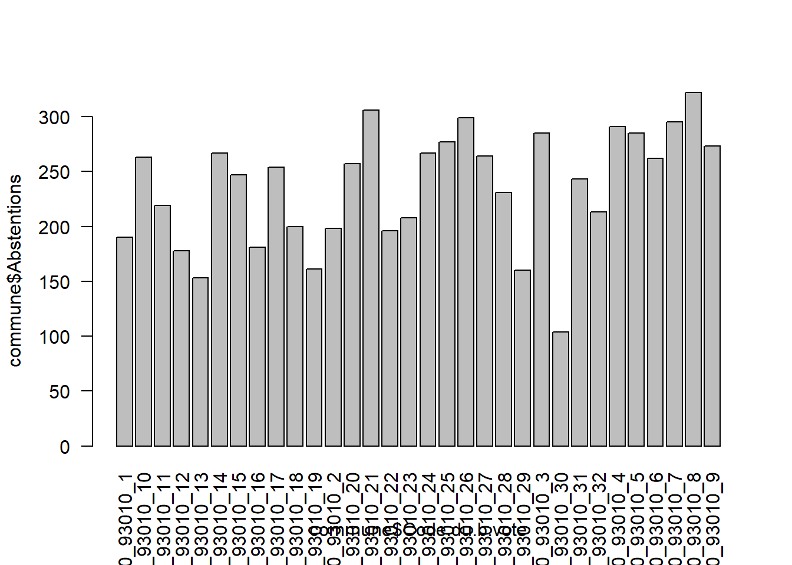
5.2.2 Plus complexe, bureau par bureau
Il faut transformer en matrice
data <- read.csv("data/pctBondy.csv")
data <- data [,-1]
# suppression 1e colonne si nécessaire
matrice <- as.matrix(data)
boxplot(matrice, las= 2)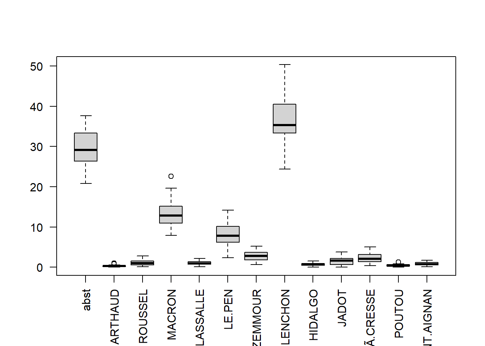
# transposition de la matrice
boxplot(t(matrice), las=2)
candidats <- colnames(matrice)
matrice <- matrice [1:5,]
colnames(matrice)## [1] "abst" "ARTHAUD" "ROUSSEL" "MACRON"
## [5] "LASSALLE" "LE.PEN" "ZEMMOUR" "MÃ.LENCHON"
## [9] "HIDALGO" "JADOT" "PÃ.CRESSE" "POUTOU"
## [13] "DUPONT.AIGNAN"barplot(t(matrice), beside = T,
xlab = "bureaux de vote", names.arg = c(1:5), legend.text = candidats)
6 Deuxième approche de l’ACP, on filtre
Deux directions possibles :
on cherche les autres candidats
on zoome sur certains bureaux de vote
6.1 Les candidats
On veut montrer uniquement les petits candidats
names(pct)## [1] "abst" "ARTHAUD" "ROUSSEL" "MACRON"
## [5] "LASSALLE" "LE.PEN" "ZEMMOUR" "MÉLENCHON"
## [9] "HIDALGO" "JADOT" "PÉCRESSE" "POUTOU"
## [13] "DUPONT.AIGNAN"pct <- pct [, c(2,3,5,7,9,10:13)]Et on reproduit le code.
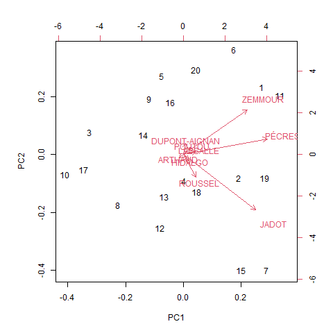
6.2 Les bureaux de vote
On choisit un bureau dans chacun des 4 groupes : 3 15 29 13
pct <- read.csv("data/pctBondy.csv", fileEncoding = "UTF-8")
pct <- pct [,-1]
pct <- pct [c(3,15,29,13),]
acp <- prcomp(pct)
biplot(acp)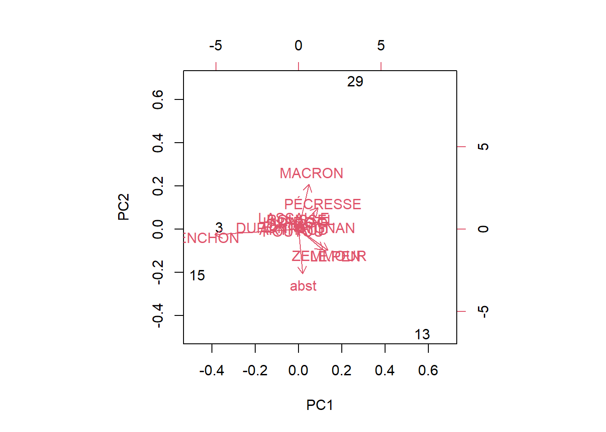
7 Compléments pour le devoir maison
voir item scriptEtudiant.html pour le groupe 1
7.1 Une vision cartographique
7.1.1 Dessin des bureaux de vote
Cette carte permet de comprendre les problèmes liés à la base. En effet, comme le dessin du bureau est fait automatiquement, il y a des bureaux discontinus.
bv <- st_read("data/gros/geo.gpkg", "bv")## Reading layer `bv' from data source
## `C:\Users\enseignant-426\01_stat\data\gros\geo.gpkg' using driver `GPKG'
## Simple feature collection with 2849 features and 3 fields
## Geometry type: MULTIPOLYGON
## Dimension: XY
## Bounding box: xmin: -6269833 ymin: 6116038 xmax: 1064508 ymax: 7056193
## Projected CRS: RGF93 / Lambert-93bvBondy <- bv [bv$insee == '93010',]
bureau <- substring(bvBondy$bureau,7,9)
rownames(bvBondy) <- bureau
bv32 <- bvBondy [rownames(bvBondy)==32,]
png("img/bv32.png")
mf_init(bv32)
mf_map(bvBondy, type = "typo", var = "bureau", add = T, leg_pos = NA)
mf_map(bv32, col = NA, border ="red",lwd=2, add = T)
mf_label(bvBondy, var = "bureau", overlap = F)
mf_layout("Bureau de vote discontinu", "opendata, réutilisation des REU")
dev.off()## png
## 2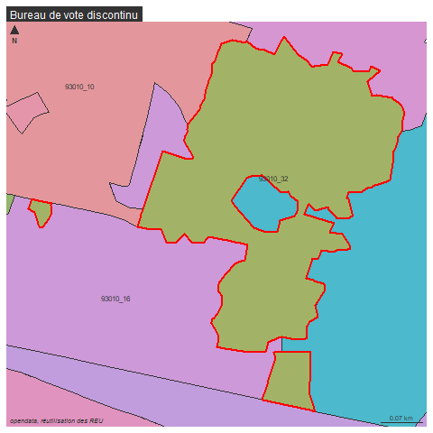
7.1.2 Une aide à la compréhension des résultats ?
Cette carte permet également de savoir situer les bureaux de vote sur la commune, et éventuellement d’opposer nord, centre et sud par exemple.
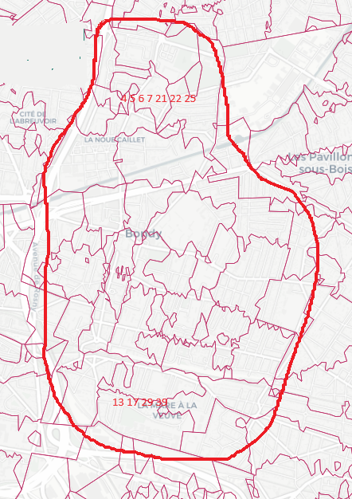
Ainsi, sur Bondy
Les bureaux 10, 12, 14, 23 représentent des profils
bvBondy <- st_read("data/gros/geo.gpkg", "bv")## Reading layer `bv' from data source
## `C:\Users\enseignant-426\01_stat\data\gros\geo.gpkg' using driver `GPKG'
## Simple feature collection with 2849 features and 3 fields
## Geometry type: MULTIPOLYGON
## Dimension: XY
## Bounding box: xmin: -6269833 ymin: 6116038 xmax: 1064508 ymax: 7056193
## Projected CRS: RGF93 / Lambert-93bvBondy <- bvBondy [bvBondy$nom == "Bondy",]
mf_map(bvBondy)
bvBondy$nom <- substring(bvBondy$bureau,7,9)
bvProfil <- bvBondy[bvBondy$nom %in% c(10,12,14,23),]
mf_label(bvProfil, var = "nom")
mf_layout ("Des profils différents au centre de Bondy même", "opendata/ élections 2022 et REU")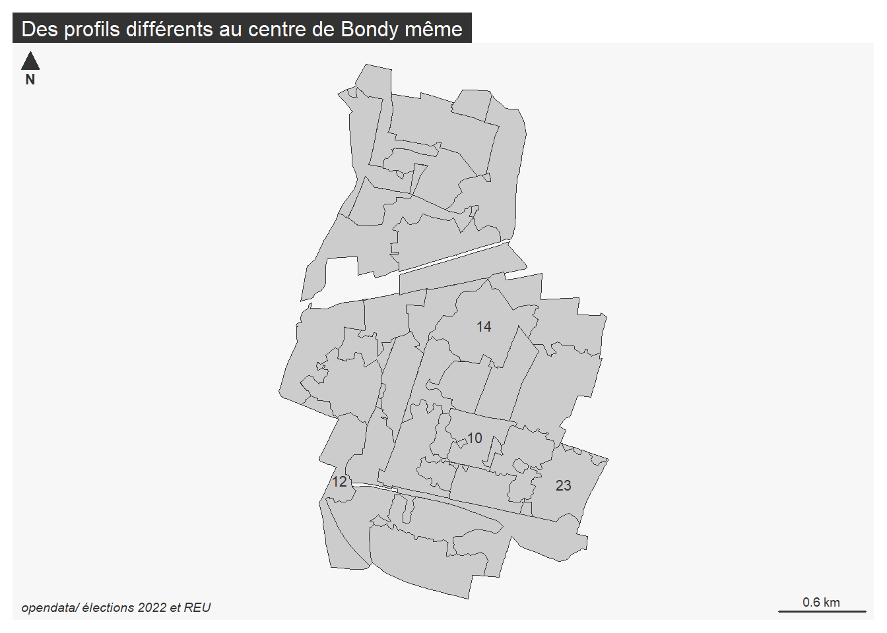
7.2 Filtrer la base du devoir maison : pb éventuels
La géographie discontinue des bureaux de vote génère des problèmes qui doivent être réglés avant de lancer l’ACP.
7.2.1 Disparition de bureaux
Cela fonctionne mais on a perdu 2 bureaux
base <- read.csv("data/devoirMaison/base.csv", fileEncoding = "UTF-8")
bondy <- base [base$INSEE_COM == '93010',]
length(bondy$bureau)## [1] 307.2.2 Doublons
table(bondy$bureau)##
## 93010_1 93010_10 93010_12 93010_13 93010_14 93010_15 93010_16 93010_17
## 1 1 1 1 1 1 1 1
## 93010_18 93010_2 93010_20 93010_21 93010_22 93010_23 93010_24 93010_25
## 1 1 1 1 1 1 1 1
## 93010_26 93010_27 93010_28 93010_29 93010_3 93010_30 93010_31 93010_32
## 1 1 1 1 1 1 1 1
## 93010_4 93010_6 93010_7 93010_8 93010_9
## 1 1 2 1 1# 2 fois le bureau 7
# la commande duplicated permet de voir les doublons
# le ! indique que l'on ne veut pas du doublon
doublon <- bondy [duplicated(bondy$bureau),]
bondy <- bondy [!duplicated(bondy$bureau),]
# la donnée sans doublons est considérée comme propre, on met les num de bureaux
# et on enregistre
rownames(bondy) <- substring(bondy$bureau,7,9)
# on supprime la 1e colonne, celle des bureaux puisqu'on a les étiquettes
bondy <- bondy [,-1]
write.csv(bondy,"data/baseBondy.csv", row.names = F, fileEncoding = "UTF-8")7.2.3 Données incomplètes
Rappel : le dictionnaire des données indique la provenance.
7.2.3.1 Cas de Pointe à Pitre
data <- read.csv("data/devoirMaison/97120.csv", fileEncoding = "UTF-8")
names(data)## [1] "X.1" "bureau"
## [3] "X" "Code.du.département"
## [5] "Libellé.du.département" "Code.de.la.circonscription"
## [7] "Libellé.de.la.circonscription" "Code.de.la.commune"
## [9] "Libellé.de.la.commune" "Inscrits"
## [11] "Abstentions" "X..Abs.Ins"
## [13] "Votants" "X..Vot.Ins"
## [15] "Blancs" "X..Blancs.Ins"
## [17] "X..Blancs.Vot" "Nuls"
## [19] "X..Nuls.Ins" "X..Nuls.Vot"
## [21] "Exprimés" "X..Exp.Ins"
## [23] "X..Exp.Vot" "N.Panneau"
## [25] "Sexe" "Nom"
## [27] "Prénom" "Voix"
## [29] "X..Voix.Ins" "X..Voix.Exp"
## [31] "N.Panneau.1" "Sexe.1"
## [33] "Nom.1" "Prénom.1"
## [35] "Voix.1" "X..Voix.Ins.1"
## [37] "X..Voix.Exp.1" "N.Panneau.2"
## [39] "Sexe.2" "Nom.2"
## [41] "Prénom.2" "Voix.2"
## [43] "X..Voix.Ins.2" "X..Voix.Exp.2"
## [45] "N.Panneau.3" "Sexe.3"
## [47] "Nom.3" "Prénom.3"
## [49] "Voix.3" "X..Voix.Ins.3"
## [51] "X..Voix.Exp.3" "N.Panneau.4"
## [53] "Sexe.4" "Nom.4"
## [55] "Prénom.4" "Voix.4"
## [57] "X..Voix.Ins.4" "X..Voix.Exp.4"
## [59] "N.Panneau.5" "Sexe.5"
## [61] "Nom.5" "Prénom.5"
## [63] "Voix.5" "X..Voix.Ins.5"
## [65] "X..Voix.Exp.5" "N.Panneau.6"
## [67] "Sexe.6" "Nom.6"
## [69] "Prénom.6" "Voix.6"
## [71] "X..Voix.Ins.6" "X..Voix.Exp.6"
## [73] "N.Panneau.7" "Sexe.7"
## [75] "Nom.7" "Prénom.7"
## [77] "Voix.7" "X..Voix.Ins.7"
## [79] "X..Voix.Exp.7" "N.Panneau.8"
## [81] "Sexe.8" "Nom.8"
## [83] "Prénom.8" "Voix.8"
## [85] "X..Voix.Ins.8" "X..Voix.Exp.8"
## [87] "N.Panneau.9" "Sexe.9"
## [89] "Nom.9" "Prénom.9"
## [91] "Voix.9" "X..Voix.Ins.9"
## [93] "X..Voix.Exp.9" "N.Panneau.10"
## [95] "Sexe.10" "Nom.10"
## [97] "Prénom.10" "Voix.10"
## [99] "X..Voix.Ins.10" "X..Voix.Exp.10"
## [101] "N.Panneau.11" "Sexe.11"
## [103] "Nom.11" "Prénom.11"
## [105] "Voix.11" "X..Voix.Ins.11"
## [107] "X..Voix.Exp.11" "INSEE_COM.x"
## [109] "P19_MAISON" "P19_RP_120M2P"
## [111] "P19_RP_ACHTOT" "P19_RP_ACH19"
## [113] "P19_RP_ACH45" "P19_RP_ACH70"
## [115] "P19_RP_ACH90" "P19_RP_ACH05"
## [117] "P19_RP_ACH15" "P19_RP_CCCOLL"
## [119] "INSEE_COM.y" "Valeur.fonciere"
## [121] "Surface.reelle.bati" "Nombre.pieces.principales"
## [123] "Surface.terrain"Il manque toutes les données IRIS car pour l’INSEE, les chiffres ne sont pas fiables.
Colmar n’a pas les valeurs foncières.
7.3 Centrer et réduire
Centrer et réduire permet de comparer les variables dont les montants sont très différents.
Centrer : on compte les écarts à la moyenne
Réduire : on divise toutes les valeurs par l’écart type.
7.3.1 Comprendre l’option “scale.” dans la commande
res <- prcomp(pct, scale. = FALSE)Il faut faire varier l’option avec FALSE et TRUE.
Le FALSE permet d’obtenir uniquement les gros candidats.
Le TRUE permet de pouvoir comparer tous les candidats
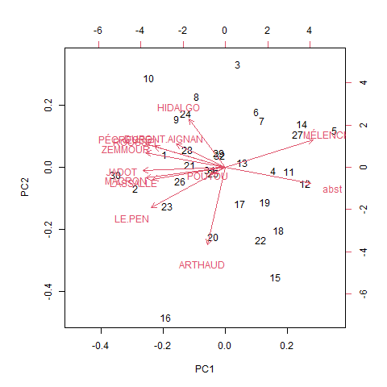
7.3.2 Idem avec la classification
pct.cr <- scale(pct, center = T, scale = T)7.3.3 Au niveau des données
On peut également utiliser la fonction scale pour les données elles-mêmes
base <- read.csv("data/baseBondy.csv")
# filtre sur 2 colonnes
base <- base [,c("Valeur.fonciere", "X..Voix.Exp.11")]
# renommer les colonnes
names(base) <- c("vf", "Dupont Aignant")
# transformation en matrice
mat <- as.matrix(base)
# graphiques pour comparer les 2 variables par bureau de vote
barplot(mat, beside=T)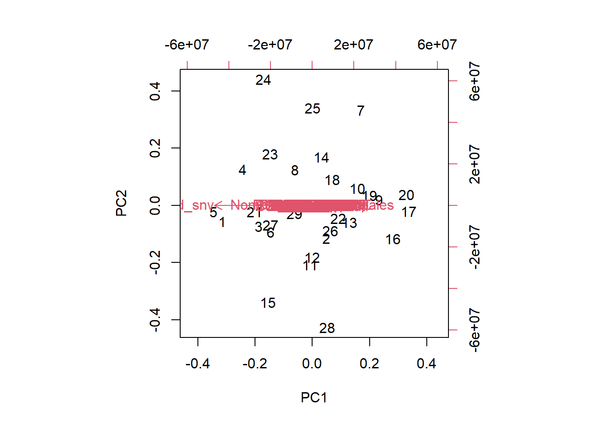
# on ne voit rien, il faut centrer réduire
mat <- scale(mat)
barplot(mat, beside = T)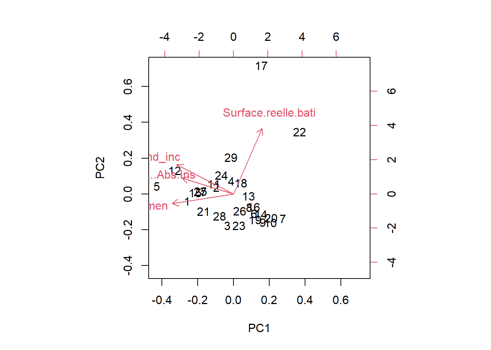
7.4 Utiliser toutes les variables
data <- read.csv("data/baseBondy.csv", fileEncoding = "UTF-8")
names(data)## [1] "Valeur.fonciere" "Surface.reelle.bati"
## [3] "Nombre.pieces.principales" "Surface.terrain"
## [5] "P19_MAISON" "P19_RP_120M2P"
## [7] "P19_RP_ACHTOT" "P19_RP_ACH19"
## [9] "P19_RP_ACH45" "P19_RP_ACH70"
## [11] "P19_RP_ACH90" "P19_RP_ACH05"
## [13] "P19_RP_ACH15" "P19_RP_CCCOLL"
## [15] "ind" "men"
## [17] "men_pauv" "men_1ind"
## [19] "men_5ind" "men_prop"
## [21] "men_fmp" "ind_snv"
## [23] "men_surf" "men_coll"
## [25] "men_mais" "log_av45"
## [27] "log_45_70" "log_70_90"
## [29] "log_ap90" "log_inc"
## [31] "log_soc" "ind_0_3"
## [33] "ind_4_5" "ind_6_10"
## [35] "ind_11_17" "ind_18_24"
## [37] "ind_25_39" "ind_40_54"
## [39] "ind_55_64" "ind_65_79"
## [41] "ind_80p" "ind_inc"
## [43] "X" "Code.du.département"
## [45] "Libellé.du.département" "Code.de.la.circonscription"
## [47] "Libellé.de.la.circonscription" "Code.de.la.commune"
## [49] "Libellé.de.la.commune" "Inscrits"
## [51] "Abstentions" "X..Abs.Ins"
## [53] "Votants" "X..Vot.Ins"
## [55] "Blancs" "X..Blancs.Ins"
## [57] "X..Blancs.Vot" "Nuls"
## [59] "X..Nuls.Ins" "X..Nuls.Vot"
## [61] "Exprimés" "X..Exp.Ins"
## [63] "X..Exp.Vot" "N.Panneau"
## [65] "Sexe" "Nom"
## [67] "Prénom" "Voix"
## [69] "X..Voix.Ins" "X..Voix.Exp"
## [71] "N.Panneau.1" "Sexe.1"
## [73] "Nom.1" "Prénom.1"
## [75] "Voix.1" "X..Voix.Ins.1"
## [77] "X..Voix.Exp.1" "N.Panneau.2"
## [79] "Sexe.2" "Nom.2"
## [81] "Prénom.2" "Voix.2"
## [83] "X..Voix.Ins.2" "X..Voix.Exp.2"
## [85] "N.Panneau.3" "Sexe.3"
## [87] "Nom.3" "Prénom.3"
## [89] "Voix.3" "X..Voix.Ins.3"
## [91] "X..Voix.Exp.3" "N.Panneau.4"
## [93] "Sexe.4" "Nom.4"
## [95] "Prénom.4" "Voix.4"
## [97] "X..Voix.Ins.4" "X..Voix.Exp.4"
## [99] "N.Panneau.5" "Sexe.5"
## [101] "Nom.5" "Prénom.5"
## [103] "Voix.5" "X..Voix.Ins.5"
## [105] "X..Voix.Exp.5" "N.Panneau.6"
## [107] "Sexe.6" "Nom.6"
## [109] "Prénom.6" "Voix.6"
## [111] "X..Voix.Ins.6" "X..Voix.Exp.6"
## [113] "N.Panneau.7" "Sexe.7"
## [115] "Nom.7" "Prénom.7"
## [117] "Voix.7" "X..Voix.Ins.7"
## [119] "X..Voix.Exp.7" "N.Panneau.8"
## [121] "Sexe.8" "Nom.8"
## [123] "Prénom.8" "Voix.8"
## [125] "X..Voix.Ins.8" "X..Voix.Exp.8"
## [127] "N.Panneau.9" "Sexe.9"
## [129] "Nom.9" "Prénom.9"
## [131] "Voix.9" "X..Voix.Ins.9"
## [133] "X..Voix.Exp.9" "N.Panneau.10"
## [135] "Sexe.10" "Nom.10"
## [137] "Prénom.10" "Voix.10"
## [139] "X..Voix.Ins.10" "X..Voix.Exp.10"
## [141] "N.Panneau.11" "Sexe.11"
## [143] "Nom.11" "Prénom.11"
## [145] "Voix.11" "X..Voix.Ins.11"
## [147] "X..Voix.Exp.11" "INSEE_COM"data <- data [, -c(43:49)]
ind <- grep("Voix", names(data))
data<- data [,c( 2:57, ind)]
data <- data [,-42]
pca <- prcomp(data, scale = F)
biplot(pca)data <- data [,c(1,43,15,41)]
pca <- prcomp(data, scale = T)
biplot(pca)Reprendre le script en classe et indiquer les commentaires
L5GEABIM Analyses bivariées et multivariées